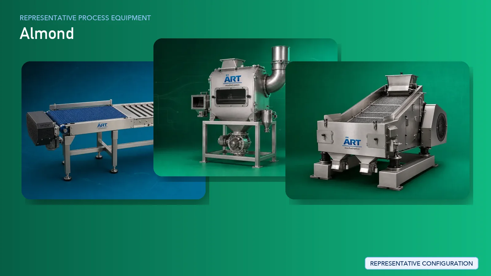

Almond Processing Plant & Machinery Solutions (Raw Almond to Kernel Processing)
Almond processing is a high-value segment in the global dry fruit industry where raw almonds (in-shell) are processed into clean almond kernels for bulk supply to wholesalers, exporters, and food industries.

About Almond Processing Plant & Machinery Solutions processing
ART Mechatronics provides complete turnkey solutions for almond processing plants, offering advanced systems for shelling, cleaning, grading, optional blanching, and packaging. Our solutions are designed to deliver minimal breakage, high efficiency, and export-quality almond kernels.
Complete Almond Process Flow
Raw almonds (with shell) are received and fed into the processing system.
Ensures smooth and continuous input.
Almonds are cleaned to remove dust, stones, and impurities.
Ensures:
- Product purity
- Protection of machinery
Outer shell is removed to obtain almond kernels.
Ensures:
- High shelling efficiency
- Minimal kernel breakage
- Maximum yield
Shell fragments and kernels are separated.
Ensures clean kernel output.
Almond kernels are graded based on size, weight, and quality.
Produces:
- Premium whole almonds
- Different size grades
Skin may be removed for certain applications.
Produces clean white kernels.
Kernels may be dried to control moisture content.
Ensures longer shelf life.
Final inspection ensures premium product quality.
Processed almond kernels are packed into large bags for wholesale supply.
Suitable for:
- Bulk export
- Wholesale distribution
Machinery Required for Almond Processing Plant
- Material Handling Systems
- Pre Cleaner
- Destoner
- Air Classifier
- Almond Shelling Machine
- Air / Gravity Separator
- Grading Machine / Color Sorter
- Blanching Machine (Optional)
- Dryer (Optional)
- Inspection System
- Bag Filling Machines
Turnkey Almond Plant Solutions
ART Mechatronics offers complete turnkey solutions for almond processing plants, including:
- Process design & plant layout
- Shelling and separation systems
- Grading and sorting systems
- Blanching and drying systems
- Automation & control panels
- Bulk packaging integration
- Installation & commissioning
- After-sales support
We customize solutions based on:
- Raw almond variety
- Desired kernel grades
- Production capacity
- Level of automation
Why Choose Art Mechatronics
- Expertise in delicate nut processing systems
- High-efficiency shelling with minimal breakage
- Advanced grading and sorting technology
- Hygienic food-grade processing systems
- Consistent premium output quality
- Global export capability
Machinery in a Almond Processing Plant & Machinery Solutions plant
Where it's used
Get pricing & specs for the Almond Processing Plant & Machinery Solutions plant
Share the product, target capacity, current process and plant location. These details help our engineers discuss the right machine or line configuration.
One partner, from design to start-up
ART Mechatronics designs, manufactures, installs and commissions your Almond Processing Plant & Machinery Solutions solution with regional presence in India, UAE and Thailand.